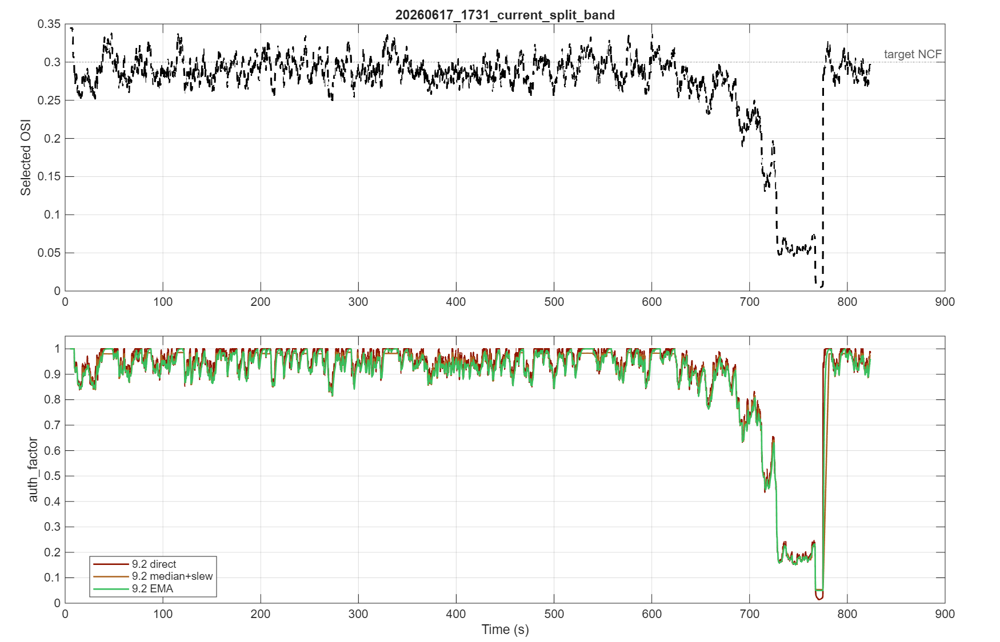
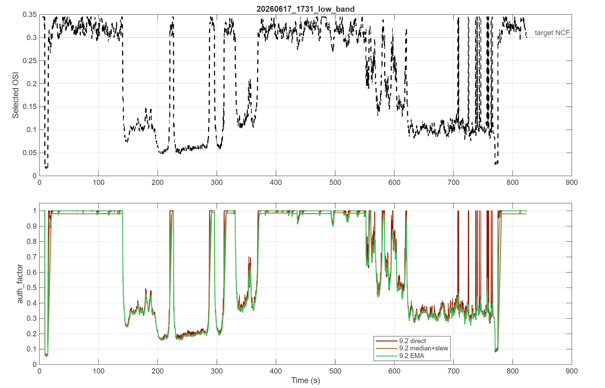
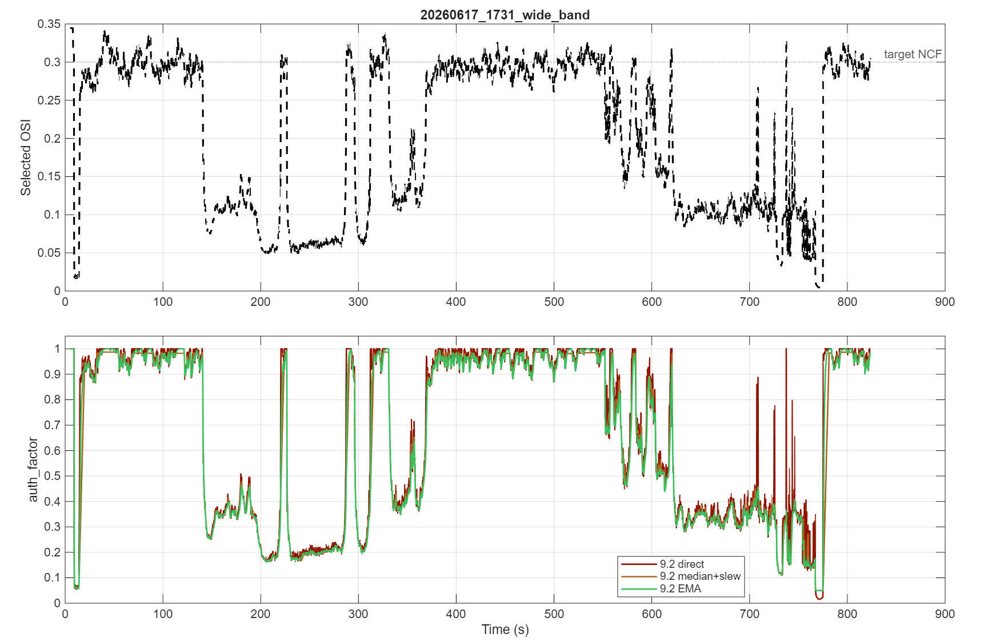
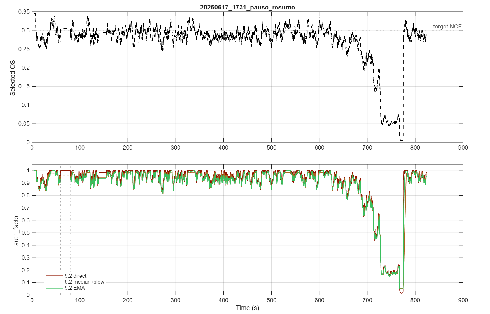
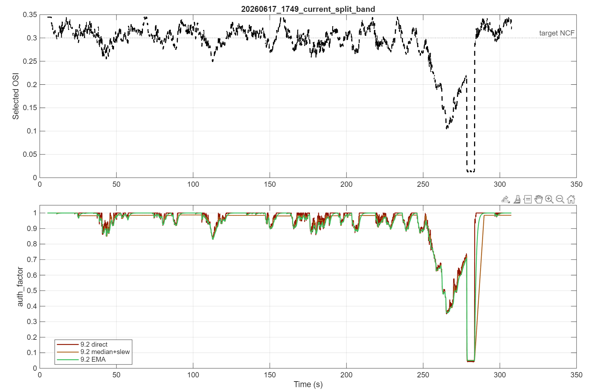
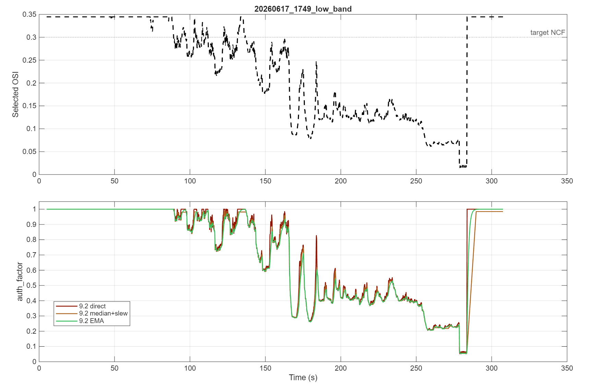
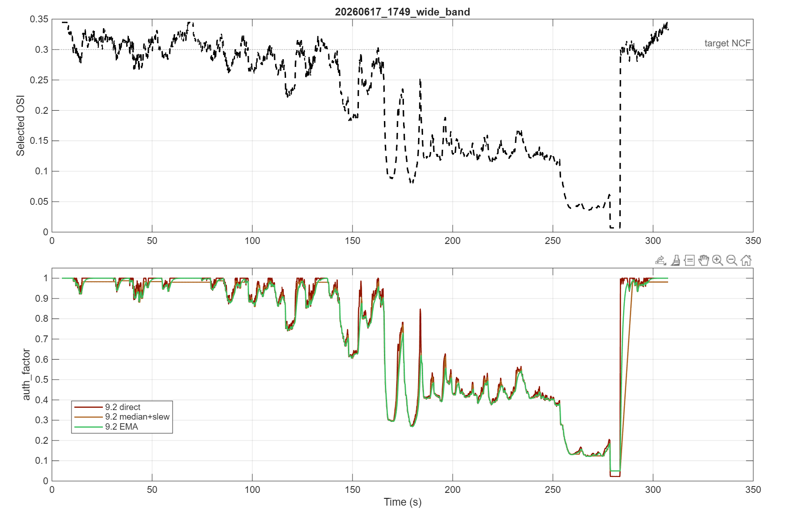
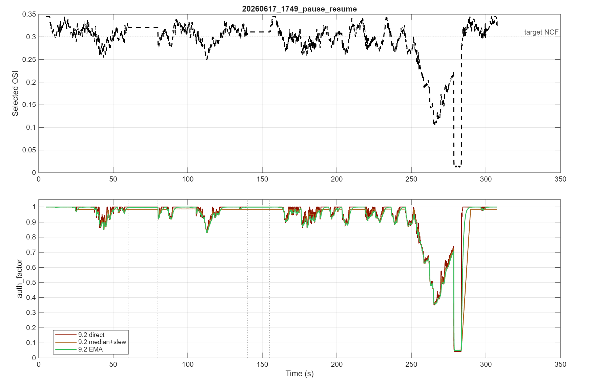

20260617_1731_current_split_band
PNG export
Offline replay of the OSI_tests case matrix. Direct 9.2 is compared against two smooth update laws using the same selected OSI trace in each case.
| Method | Worst min auth | Mean auth | Mean max step | Mean total variation | Total glitches | Max pause std | Max resume step |
|---|---|---|---|---|---|---|---|
| 9.2 direct | 0.0146 | 0.8059 | 0.6570 | 92.18 | 0 | 0.00874 | 0.0624 |
| 9.2 median+slew | 0.0500 | 0.7867 | 0.2081 | 15.55 | 0 | 0.00727 | 0.0476 |
| 9.2 EMA | 0.0500 | 0.7912 | 0.1692 | 19.16 | 0 | 0.00317 | 0.0293 |
osi_9_2_auth_factor_validation_result.mat
| Case | Method | Paused | Min OSI | Mean OSI | Min auth | Mean auth | Final auth | Max step | Total variation | Glitches | Pause std | Resume max step |
|---|---|---|---|---|---|---|---|---|---|---|---|---|
| 20260617_1731_current_split_band | 9.2 direct | 0 | 0.0044 | 0.2708 | 0.0146 | 0.8938 | 0.9843 | 0.6978 | 111.01 | 0 | NaN | NaN |
| 20260617_1731_current_split_band | 9.2 median+slew | 0 | 0.0044 | 0.2708 | 0.0538 | 0.8802 | 0.9772 | 0.0554 | 22.26 | 0 | NaN | NaN |
| 20260617_1731_current_split_band | 9.2 EMA | 0 | 0.0044 | 0.2708 | 0.0500 | 0.8802 | 0.9606 | 0.0436 | 25.39 | 0 | NaN | NaN |
| 20260617_1731_low_band | 9.2 direct | 0 | 0.0160 | 0.2137 | 0.0535 | 0.6791 | 1.0000 | 0.8066 | 205.33 | 0 | NaN | NaN |
| 20260617_1731_low_band | 9.2 median+slew | 0 | 0.0160 | 0.2137 | 0.0627 | 0.6538 | 0.9803 | 0.3984 | 21.09 | 0 | NaN | NaN |
| 20260617_1731_low_band | 9.2 EMA | 0 | 0.0160 | 0.2137 | 0.0555 | 0.6616 | 0.9940 | 0.4033 | 31.97 | 0 | NaN | NaN |
| 20260617_1731_wide_band | 9.2 direct | 0 | 0.0046 | 0.2015 | 0.0153 | 0.6646 | 1.0000 | 0.8568 | 202.30 | 0 | NaN | NaN |
| 20260617_1731_wide_band | 9.2 median+slew | 0 | 0.0046 | 0.2015 | 0.0500 | 0.6435 | 0.9823 | 0.3984 | 28.02 | 0 | NaN | NaN |
| 20260617_1731_wide_band | 9.2 EMA | 0 | 0.0046 | 0.2015 | 0.0500 | 0.6447 | 0.9835 | 0.4005 | 36.95 | 0 | NaN | NaN |
| 20260617_1731_pause_resume | 9.2 direct | 702 | 0.0044 | 0.2714 | 0.0146 | 0.8957 | 0.9843 | 0.6978 | 105.59 | 0 | 0.00874 | 0.0514 |
| 20260617_1731_pause_resume | 9.2 median+slew | 702 | 0.0044 | 0.2714 | 0.0538 | 0.8808 | 0.9772 | 0.0554 | 21.33 | 0 | 0.00727 | 0.0412 |
| 20260617_1731_pause_resume | 9.2 EMA | 702 | 0.0044 | 0.2714 | 0.0500 | 0.8803 | 0.9606 | 0.0436 | 24.16 | 0 | 0.00317 | 0.0151 |
| 20260617_1749_current_split_band | 9.2 direct | 0 | 0.0124 | 0.2891 | 0.0412 | 0.9324 | 1.0000 | 0.6433 | 31.69 | 0 | NaN | NaN |
| 20260617_1749_current_split_band | 9.2 median+slew | 0 | 0.0124 | 0.2891 | 0.0517 | 0.9120 | 0.9855 | 0.2782 | 6.71 | 0 | NaN | NaN |
| 20260617_1749_current_split_band | 9.2 EMA | 0 | 0.0124 | 0.2891 | 0.0500 | 0.9203 | 1.0000 | 0.1764 | 8.19 | 0 | NaN | NaN |
| 20260617_1749_low_band | 9.2 direct | 0 | 0.0155 | 0.2347 | 0.0517 | 0.7273 | 1.0000 | 0.4771 | 22.88 | 0 | NaN | NaN |
| 20260617_1749_low_band | 9.2 median+slew | 0 | 0.0155 | 0.2347 | 0.0580 | 0.7098 | 0.9844 | 0.1094 | 8.76 | 0 | NaN | NaN |
| 20260617_1749_low_band | 9.2 EMA | 0 | 0.0155 | 0.2347 | 0.0537 | 0.7144 | 1.0000 | 0.0632 | 8.71 | 0 | NaN | NaN |
| 20260617_1749_wide_band | 9.2 direct | 0 | 0.0068 | 0.2210 | 0.0227 | 0.7210 | 1.0000 | 0.4334 | 28.98 | 0 | NaN | NaN |
| 20260617_1749_wide_band | 9.2 median+slew | 0 | 0.0068 | 0.2210 | 0.0500 | 0.7004 | 0.9812 | 0.0913 | 9.84 | 0 | NaN | NaN |
| 20260617_1749_wide_band | 9.2 EMA | 0 | 0.0068 | 0.2210 | 0.0500 | 0.7063 | 1.0000 | 0.0464 | 10.22 | 0 | NaN | NaN |
| 20260617_1749_pause_resume | 9.2 direct | 702 | 0.0124 | 0.2903 | 0.0412 | 0.9337 | 1.0000 | 0.6433 | 29.66 | 0 | 0.00000 | 0.0624 |
| 20260617_1749_pause_resume | 9.2 median+slew | 702 | 0.0124 | 0.2903 | 0.0517 | 0.9132 | 0.9855 | 0.2782 | 6.41 | 0 | 0.00038 | 0.0476 |
| 20260617_1749_pause_resume | 9.2 EMA | 702 | 0.0124 | 0.2903 | 0.0500 | 0.9221 | 1.0000 | 0.1764 | 7.70 | 0 | 0.00153 | 0.0293 |







